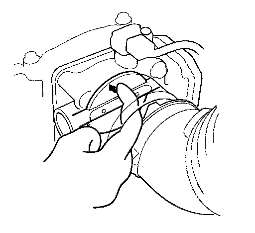

DTC Troubleshooting
DTC P1684: Throttle Valve Return Spring Performance ProblemCAUTION: Do not insert your fingers into the installed throttle body when you turn the ignition switch ON (II) or while the ignition switch is ON (II). If you do, you will seriously injure your fingers if the throttle valve is activated.
NOTE: Before you troubleshoot, record all freeze data and any on-board snapshot, and review the general troubleshooting information.
1. Turn the ignition switch ON (II).
2. Clear the DTC with the HDS.
3. Start the engine. Hold the engine speed at 3,000 rpm without load (in Park or neutral) until the radiator fan comes on, then let it idle.
4. Turn the ignition switch OFF, and wait 10 seconds.
5. Turn the ignition switch ON (II).
6. Check for Temporary DTCs or DTCs with the HDS.
Is DTC P1684 indicated?
YES - Go to step 7.
NO - Intermittent failure, the system is OK at this time. Check for poor connections or loose terminals at the throttle body and the PCM.
7. Turn the ignition switch OFF.
8. Disconnect the intake air duct from the throttle body.

9. Push the throttle valve open as shown.
10. Release the throttle valve.
Does the throttle valve return?
YES - Clean the throttle body, then go to step 12 and recheck. If DTC P1684 is indicated, go to step 11.
NO - Go to step 11.
11. Replace the throttle body.
12. Turn the ignition switch ON (II).
13. Reset the PCM with the HDS.
14. Do the PCM idle learn procedure.
15. Turn the ignition switch OFF, and wait 10 seconds.
16. Turn the ignition switch ON (II).
17. Check for Temporary DTCs or DTCs with the HDS.
Is DTC P1684 indicated?
YES - Check for poor connections or loose terminals at the throttle body and the PCM, then go to step 1.
NO - Troubleshooting is complete. If any other Temporary DTCs or DTCs are indicated, go to the indicated DTCs troubleshooting.